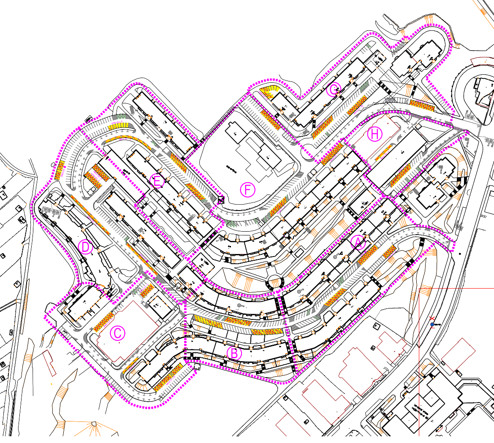

Prehľad témy
Na Hlaváčikovej a Veternicovej ulici v Karlovej Vsi sa plánuje premena
približne 33 % miest na vyhradené. Miesta budú pridelené žrebovaním a
určené pre konkrétnych držiteľov.
Prečo je to problematické
- Zníži sa pružnosť parkovania, pre všetkých obyvateľov, kedže sa odstráni asi 33 % parkovacích miest. Ak niekto z vyhradeného miesta ide na dovolenku, alebo služobnú cestu, jeho miesto bude nevyužité, ale ostatní ho nebudú môcť použiť.
- Autá z vyhradených miest môžu parkovať aj na ostatných, takže ak sa vyskytne parkovacie miesto bližšie k domu, bude ho môcť obsadiť auto z vyhradeného miesta.
- Rodiny s dvoma autami môžu kúpiť jedno parkovacie miesto, ale s druhým autom budú mať problém nájsť voľné miesto.
- Návštevy budú mať väčší problém ako keď tu bolo rezidentské parkovanie. Babka, ktorá by po práci prišla na hodinu postrážiť vnúčatá nebude mať šancu.
- Nerovnomerné zaťaženie sektorov - niektoré sektory majú skoro 50 % parkovacích miest, ktoré sa zmenia na vyhradené, iné iba 24 %.
- Autá sa prestanú používať, ak bude problém zaparkovať po návrate, tak ľudia radšej pôjdu bez auta, takže viac áut ostane stáť, takže bude ťažšie nájsť voľné miesto, takže ľudia radšej pôjdu bez auta...
- Zvýši sa tlak na okolité ulice, ak nebudem vedieť zaparkovať pri dome, tak skúsim o ulicu ďalej. Tento problém sa týka aj okolitých ulíc.
- Až do zrušenia - ak niekto vyhrá teraz, bude to mať aj o rok, až kým nepríde PAAS. Už teraz je v oblasti vyhradených.
- Aj víkendy budú problém - Bohatší ľudia, ktorí si zaplatia vyhradené miesto, častejšie cestujú aj cez víkend, takže miesta budú prázdne, ale zaparkovať nebude kam.
Prílohy
Simulácia
Zobraziť simuláciuKto o tom rozhodol
- Oddelenie dopravy predložilo návrh Komisii pre dopravu a verejný poriadok.
- Vedúca oddelenia: Ing. Jana Španková.
- Komisia rokovala na zasadnutiach 24.11.2025 (hlasovanie 5:0:0) a 2.2.2026 (hlasovanie 7:0:0).
- Predseda: Ing. Martin Masár. Členovia: Mgr. Zuzana Jajcayová, Ing. Peter Lenč, Ing. Martin Michlík, Ing. arch. Boris Schultz, Martin Paško, Mgr. Ing. Anna Zemanová, Michal Mihálik.
Časová os
13.10.2025 - Objednávka zmien POD pre zónu Hlaváčiková-Veternicová, Silvánska, Nábelková.
24.11.2025 - Zápisnica komisie: návrh vyhradiť približne 30 % miest.
02.02.2026 - Zápisnica komisie: prerokovanie spôsobu prideľovania.
23.03.2026 - Pozvánka na zasadnutie k projektu organizácie dopravy a prideľovaniu miest.
31.03.2026 - Objednávka opravy povrchu parkoviska na Hlaváčikovej a Veternicovej.
Rozloženie parkovacích miest v sektoroch
| Sektor | Vyhr.+ | Nevyhr. | Pomer |
|---|---|---|---|
| A | 25 | 79 | 24,04 % |
| B | 30 | 35 | 46,15 % |
| C | 35 | 85 | 29,17 % |
| D | 42 | 85 | 33,07 % |
| E | 33 | 60 | 35,48 % |
| F | 29 | 69 | 29,59 % |
| G | 40 | 81 | 33,06 % |
| H | 14 | 29 | 32,56 % |
| Spolu | 248 | 523 | 32,17 % |
